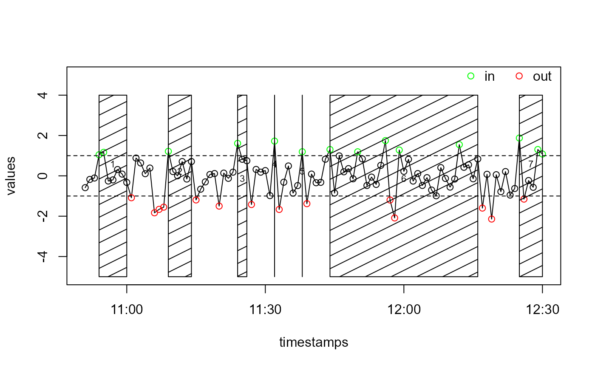

Get Events by Evaluation of a State Variable
eventsByState(timestamps, states, eventSeparationTime, signalWidth, in.state = 1, out.state = 0)
| timestamps | vector of timestamps (POSIXct) |
|---|---|
| states | vector of state values in which each element corresponds to one timestamp in timstamps. If the state is the value given in in.state) the corresponding times are considered to be lying within an event. If the state is the value given in out.state) the corresponding times are considered to be lying out of an event. For values that are neither of the values given in in.state and out.state, respectively, the corresponding timestamps are considered to either belong to an event or not, depending on the previous clear state ("in" or "out") in the sequence of states. |
| eventSeparationTime | same meaning as in |
| signalWidth | see description in |
| in.state | value in states indicating the state "in event". Default: 1 |
| out.state | value in states indicating the state "out of event". Default: 0 |
event characteristics (begin, end, duration, ...) in a data frame, as
returned by hsEvents
# Generate random timestamps starttime <- as.POSIXct("2015-03-12 10:51") n <- 100 timestamps <- seq(starttime, by = 60, length.out = n) values <- rnorm(n) # Give values above 1 the state "in" and values below -1 the state "out" states <- rep("", times = n) states[values > 1] <- "in" states[values < -1] <- "out" # Generate the events events <- eventsByState( timestamps, states, eventSeparationTime = 5 * 60, in.state = "in", out.state = "out", signalWidth = 60 ) # Prepare a vector of colours col <- rep("black", length(states)) col[states == "in"] <- "green" col[states == "out"] <- "red" # Plot the values, the threshold lines and a legend graphics::plot(timestamps, values, type = "l", ylim = c(-5, 5))legend( "topright", bty = "n", legend = c("in", "out"), col = c("green", "red"), pch = 1, bg = "white", horiz = TRUE )